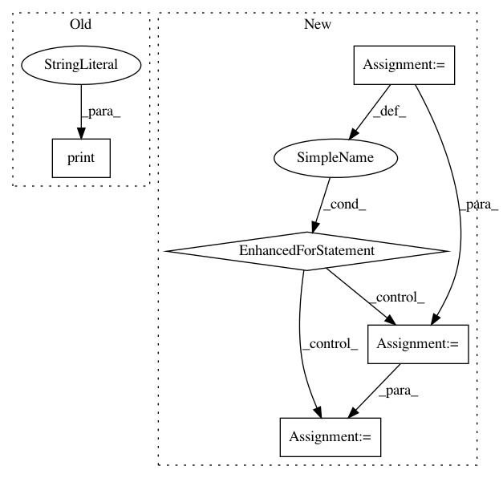

c8b28432a637a780eed96547260722ff3dede57e,niftynet/engine/sampler_selective.py,,rand_choice_coordinates,#Any#Any#Any#Any#Any#Any#,350
Before Change
list_indices_fin = np.random.choice(list_indices, n_samples,
replace=False, p=proba)
else:
print("No probability weighting needed")
list_indices_fin = list_indices
np.random.shuffle(list_indices)
for i in range(0, n_samples):
indices_to_add = candidates_indices[list_indices_fin[i]]
After Change
list_indices_fin = np.arange(len(candidates_indices))
if mean_counts_size is not None:
// Probability weighting considered
proba = [p for (c, p)
in zip(candidates.flatten(), mean_counts_size.flatten())
if c >= 1]
list_indices_fin = np.random.choice(
list_indices_fin, n_samples, replace=False, p=proba)
else:
np.random.shuffle(list_indices_fin)
list_indices_fin = list_indices_fin[:n_samples]
max_coords = np.zeros((n_samples, N_SPATIAL), dtype=np.int32)
half_win = np.floor(np.asarray(win_sizes["image"]) / 2).astype(np.int)
for (i_sample, ind) in enumerate(list_indices_fin):
indices_to_add = candidates_indices[ind]
max_coords[i_sample, :N_SPATIAL] = \
indices_to_add[:N_SPATIAL] - half_win[:N_SPATIAL]
// adjust max spatial coordinates based on each spatial window size
all_coordinates = {}
for mod in list(win_sizes):
win_size = win_sizes[mod][:N_SPATIAL]
half_win_diff = np.floor((max_spatial_win - win_size) / 2.0)
In pattern: SUPERPATTERN
Frequency: 3
Non-data size: 5
Instances
Project Name: NifTK/NiftyNet
Commit Name: c8b28432a637a780eed96547260722ff3dede57e
Time: 2017-10-04
Author: wenqi.li@ucl.ac.uk
File Name: niftynet/engine/sampler_selective.py
Class Name:
Method Name: rand_choice_coordinates
Project Name: AlexEMG/DeepLabCut
Commit Name: 199f387b50df1f32ded6ac5d54b68f08f009661b
Time: 2019-09-19
Author: amathis@fas.harvard.edu
File Name: deeplabcut/create_project/new.py
Class Name:
Method Name: create_new_project
Project Name: ClimbsRocks/auto_ml
Commit Name: 532096f9f9a96f689ee644cdb3560def98a4c410
Time: 2016-08-20
Author: ClimbsBytes@gmail.com
File Name: auto_ml/predictor.py
Class Name: Predictor
Method Name: _get_xgb_feat_importances